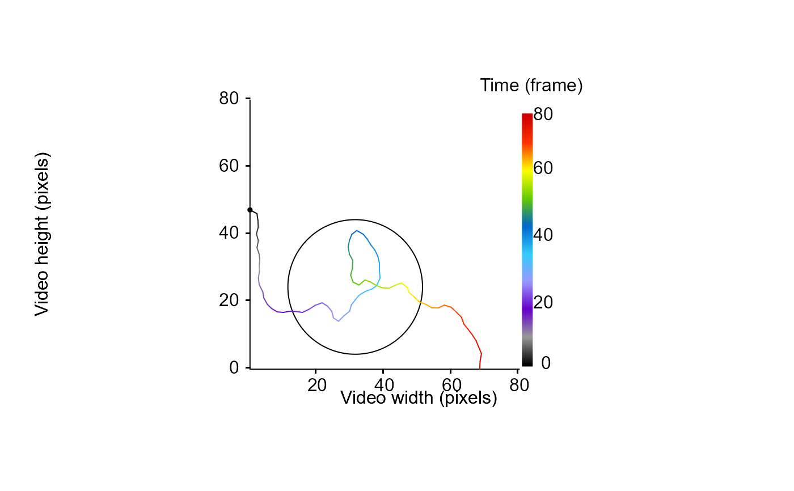

Compute the distance from the particle to the edge of an object (e.g., the arena) over its trajectory.
Source:R/dist2Edge.R
dist2Edge.RdGiven a data frame containing tracking information for a given tracklet and a data frame containing the coordinates of an object edges, this function compute the euclidean distance between the edge of the object (e.g., the arena) and the coordinates of the particle over its trajectory. The function then returns the distance between each points of the particle's trajectory and the closest point to the object edge.
Arguments
- df
A data frame containing at x, y coordinates named "x.pos", "y.pos", for a tracklet.
- edge
A data frame containing x, y coordinates named "x.pos", "y.pos" specifiyng the location of the arena or any object edge.
- customFunc
A function used to specify the formula allowing to compute the distance between a given object or arena edge and the particle over its trajectory. It is possible to call already implemented methods for circular or polygonal arena by calling customFunc = "CircularArena" or customFunc = "PolygonArena", respectively.
Value
This function returns a vector containing the distance between each points of the trajectory and the closest point of the object edge. If customFunc argument is an already implemented method (i.e., "CircularArena", "PolygonArena") negative values indicate increasing distance from the edge of the object in the direction of its center (the particle is considered inside) and vice versa.
Examples
# generate a dummy tracklet
set.seed(2023)
## start to specify some parameters to generate the tracklet
TrackL <-
100 # the length of the tracklet or a sequence to randomly sample tracklet's length
TrackDatTemp <-
trajr::TrajGenerate(sample(TrackL, 1), random = TRUE, fps = 1)
TrackDat <- MoveR::trackletsClass(list(
data.frame(
x.pos = TrackDatTemp[["x"]] - min(TrackDatTemp[["x"]]),
y.pos = TrackDatTemp[["y"]] - min(TrackDatTemp[["y"]]),
frame = TrackDatTemp[["time"]]
)
))
# Exemple 1: With a circular arena
# simulate a circular arena of 20 pixels radius and centered on the particle trajectory
arenaEdge <- as.data.frame(MoveR::circles(mean(TrackDat[[1]][["x.pos"]]),
mean(TrackDat[[1]][["y.pos"]]),
radius = 20,
draw = F))
str(arenaEdge)
#> 'data.frame': 500 obs. of 2 variables:
#> $ x.pos: num 51.3 51.3 51.3 51.2 51.2 ...
#> $ y.pos: num 24.4 24.7 25 25.2 25.5 ...
# draw the tracklet and the arena edge
MoveR::drawTracklets(TrackDat,
imgRes = c(80, 80),
add2It = list(graphics::polygon(
x = arenaEdge[["x.pos"]], y = arenaEdge[["y.pos"]], cex = 0.1
)))

# Compute the distance to the closest part of the edge based on the form of the arena (here circular)
# Negative values indicate increasing distance from the edge of the object in the direction of its center (the particle is considered inside) and vice versa.
MoveR::dist2Edge(TrackDat[[1]],
edge = arenaEdge,
customFunc = "CircularArena")
#> [1] 18.7823577 16.4582563 15.0931207 13.8661236 13.3560386 11.9547261
#> [7] 11.4459542 10.2583611 9.5002640 9.2819667 8.8674120 8.9262716
#> [13] 8.5717987 7.5194782 7.3970682 6.6314271 5.7005973 4.3696927
#> [19] 2.6922671 0.9774847 -0.8916157 -2.5470174 -4.7281222 -6.9042622
#> [25] -9.0843573 -9.9826310 -9.9314946 -8.7164378 -8.6621834 -10.8019596
#> [31] -12.5681811 -14.5678377 -16.3044508 -17.2888659 -16.7752263 -15.1299182
#> [37] -13.6746612 -12.2112189 -11.3865100 -9.8946198 -8.7661247 -7.6458672
#> [43] -6.6841949 -5.3150442 -4.1624307 -3.2247876 -4.3428585 -6.0950072
#> [49] -7.9107382 -10.1608787 -12.0041414 -14.4512557 -16.2626331 -18.4496583
#> [55] -18.7391554 -16.4947389 -15.3575868 -13.7685810 -11.9577174 -9.8816123
#> [61] -8.1258824 -6.2198935 -4.5553265 -3.9126760 -2.2274825 -0.4524672
#> [67] 1.6072252 3.5574979 5.4761156 6.9578644 9.0421032 11.2462184
#> [73] 12.7711594 14.0918038 15.6964364 17.5537930 19.2826263 20.7471894
#> [79] 22.3828249 23.1623846 24.2888489
# Exemple 2: With a a polygonal arena
# simulate a circular arena of 20 pixels radius and centered on the particle trajectory
arenaEdge <- as.data.frame(MoveR::polygons(mean(TrackDat[[1]][["x.pos"]]),
mean(TrackDat[[1]][["y.pos"]]),
width = 40,
height = 40,
sides = 4,
rotation = (45 * pi) / (180),
draw = F))
str(arenaEdge)
#> 'data.frame': 4 obs. of 2 variables:
#> $ x.pos: num 45.4 45.4 17.1 17.1
#> $ y.pos: num 10.3 38.6 38.6 10.3
# draw the tracklet and the arena edge
MoveR::drawTracklets(TrackDat,
imgRes = c(80, 80),
add2It = list(graphics::polygon(
x = arenaEdge[["x.pos"]], y = arenaEdge[["y.pos"]], cex = 0.1
)))
 # Compute the distance to the closest part of the edge based on the form of the arena (here circular)
# Negative values indicate increasing distance from the edge of the object in the direction of its center (the particle is considered inside) and vice versa.
MoveR::dist2Edge(TrackDat[[1]],
edge = arenaEdge,
customFunc = "PolygonArena")
#> [1] 19.2277966 16.8796519 15.8271121 15.1006686 15.2913564 14.6384137
#> [7] 15.0309620 14.4320114 14.2088141 14.3899416 14.3019480 14.6244727
#> [13] 14.3809819 13.2962813 13.0217447 11.9337057 10.7098223 9.0357961
#> [19] 7.2087461 5.5057419 3.4901093 1.5372732 -0.4275203 -2.2741492
#> [25] -4.3311166 -6.0063362 -6.9123259 -4.9165430 -3.9458275 -5.5872874
#> [31] -6.9080986 -8.8394313 -10.4479257 -11.6694334 -11.1662214 -9.2781942
#> [37] -7.7858018 -6.7744362 -6.9329301 -6.9610106 -5.1356325 -3.2554390
#> [43] -1.6505652 0.1125051 1.5221174 2.6279702 1.4794940 -0.3487105
#> [49] -2.2441757 -4.4593061 -6.1848512 -8.6628137 -10.6700779 -12.7322906
#> [55] -12.9901581 -11.2676548 -9.7218938 -7.8878287 -6.0644041 -3.9893752
#> [61] -2.2401427 -0.3705264 1.3419793 1.8971271 3.4190473 4.9316184
#> [67] 6.8791351 8.6249111 10.6021036 12.3099056 14.3149765 16.1742334
#> [73] 17.4141332 18.1533472 19.3366758 20.6460709 21.8604379 22.8353235
#> [79] 24.0405956 24.3109146 25.0462451
# Exemple 3: With a polygonal arena, using a distance matrix to avoid tough computation
if (FALSE) {
# Download the first dataset from the sample data repository
Path2Data <- MoveR::DLsampleData(dataSet = 1, tracker = "TRex")
Path2Data
# Import the list containing the 9 vectors classically used for further computation
trackDat <- MoveR::readTrex(Path2Data[[1]])
# load the distance matrix to the arena edge, an object or the location of one or several areas of interest (here we have created a distance map using ImageJ)
# and retrieve the value of the edge limit (1) to plot it
arenaEdge <- MoveR::locROI(Path2Data[[2]], edgeCrit = 1, xy = 1, order = T)
# draw only the first tracklet
MoveR::drawTracklets(trackDat,
selTrack = 1,
add2It = list(graphics::polygon(x = arenaEdge$x.pos, y = arenaEdge$y.pos)))
# Retrieve the distance from the edge using the distance matrix,
# because it is tough and time consuming to compute the distance to the closest part of the arena edge in this case (lot of vertices on this polygon)
# we can use another sister function helping to retrieve the distance to the edge from the distance matrix
## NB: here NAs are introduced because some tracklets in the raw data have Inf values in x and y.pos, which usually produce a warning message
## here the warning has been silenced but in this case retrieving the distance from the edge should be preceded by a filtering step to remove Inf values (see \code{\link{filterTracklets}})
w <- getOption("warn")
options(warn = -1)
MoveR::locPos(Path2Data[[2]], trackDat[[1]], Fun = function(x) round(x, digits = 0))[950:1000] # display only the 50 position between the indices 950 and 1000
options(warn = w)
}
# Compute the distance to the closest part of the edge based on the form of the arena (here circular)
# Negative values indicate increasing distance from the edge of the object in the direction of its center (the particle is considered inside) and vice versa.
MoveR::dist2Edge(TrackDat[[1]],
edge = arenaEdge,
customFunc = "PolygonArena")
#> [1] 19.2277966 16.8796519 15.8271121 15.1006686 15.2913564 14.6384137
#> [7] 15.0309620 14.4320114 14.2088141 14.3899416 14.3019480 14.6244727
#> [13] 14.3809819 13.2962813 13.0217447 11.9337057 10.7098223 9.0357961
#> [19] 7.2087461 5.5057419 3.4901093 1.5372732 -0.4275203 -2.2741492
#> [25] -4.3311166 -6.0063362 -6.9123259 -4.9165430 -3.9458275 -5.5872874
#> [31] -6.9080986 -8.8394313 -10.4479257 -11.6694334 -11.1662214 -9.2781942
#> [37] -7.7858018 -6.7744362 -6.9329301 -6.9610106 -5.1356325 -3.2554390
#> [43] -1.6505652 0.1125051 1.5221174 2.6279702 1.4794940 -0.3487105
#> [49] -2.2441757 -4.4593061 -6.1848512 -8.6628137 -10.6700779 -12.7322906
#> [55] -12.9901581 -11.2676548 -9.7218938 -7.8878287 -6.0644041 -3.9893752
#> [61] -2.2401427 -0.3705264 1.3419793 1.8971271 3.4190473 4.9316184
#> [67] 6.8791351 8.6249111 10.6021036 12.3099056 14.3149765 16.1742334
#> [73] 17.4141332 18.1533472 19.3366758 20.6460709 21.8604379 22.8353235
#> [79] 24.0405956 24.3109146 25.0462451
# Exemple 3: With a polygonal arena, using a distance matrix to avoid tough computation
if (FALSE) {
# Download the first dataset from the sample data repository
Path2Data <- MoveR::DLsampleData(dataSet = 1, tracker = "TRex")
Path2Data
# Import the list containing the 9 vectors classically used for further computation
trackDat <- MoveR::readTrex(Path2Data[[1]])
# load the distance matrix to the arena edge, an object or the location of one or several areas of interest (here we have created a distance map using ImageJ)
# and retrieve the value of the edge limit (1) to plot it
arenaEdge <- MoveR::locROI(Path2Data[[2]], edgeCrit = 1, xy = 1, order = T)
# draw only the first tracklet
MoveR::drawTracklets(trackDat,
selTrack = 1,
add2It = list(graphics::polygon(x = arenaEdge$x.pos, y = arenaEdge$y.pos)))
# Retrieve the distance from the edge using the distance matrix,
# because it is tough and time consuming to compute the distance to the closest part of the arena edge in this case (lot of vertices on this polygon)
# we can use another sister function helping to retrieve the distance to the edge from the distance matrix
## NB: here NAs are introduced because some tracklets in the raw data have Inf values in x and y.pos, which usually produce a warning message
## here the warning has been silenced but in this case retrieving the distance from the edge should be preceded by a filtering step to remove Inf values (see \code{\link{filterTracklets}})
w <- getOption("warn")
options(warn = -1)
MoveR::locPos(Path2Data[[2]], trackDat[[1]], Fun = function(x) round(x, digits = 0))[950:1000] # display only the 50 position between the indices 950 and 1000
options(warn = w)
}